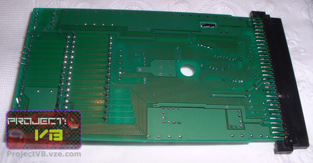
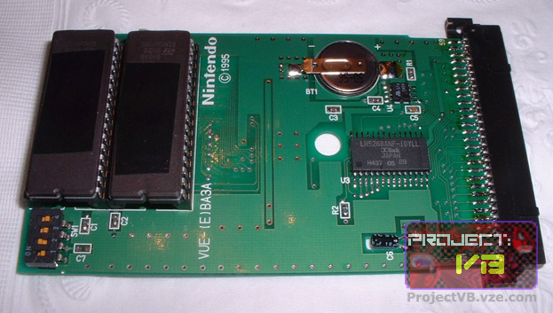
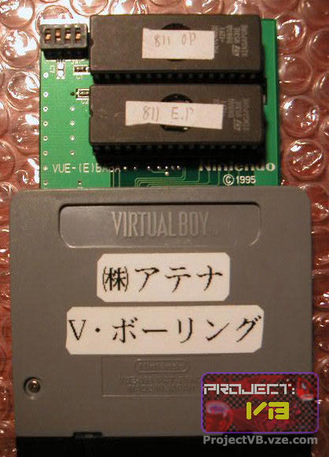
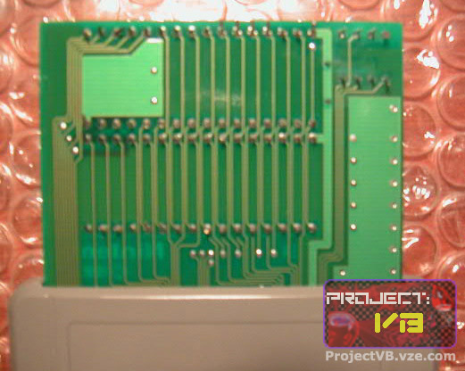
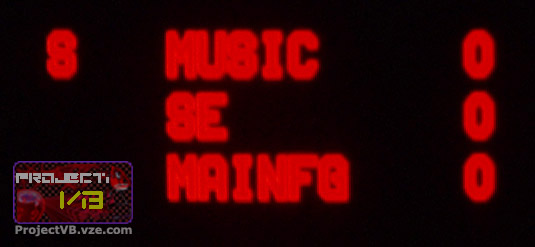

Virtual Bowling Prototype
Here are a bunch of pictures and screenshots of the one of the two first known Prototype carts, Virtual Bowling!!! Many thanks go out to the mysterious VB collector "Mr. G"! I got an email from him with many pics of the carts and a few screenshots. Please do not take the Project:VB logo off the pics and use the pics elsewhere, I tried putting the logo in a place that didn't block too much, but if I start seeing them with the logo cropped out, I'll have to put them where it blocks the pictures :-(.

Here is the opened cart of Virtual Bowling. Note the number on it - VUE-(E) BA3A . That is the same number as Faceball, and it has 32k of battery backed SRAM, although neither VBowling nor Faceball use it (I'd assume that they put it there so it could be a universal Proto cart)

Here is the back of the proto cart

Here is a pic from the other side, showing the dip switches better.

Full shot of the back of the Virtual Bowling cart. I'm assuming that says Athena and V Bowling or something similar.

Here is a picture of the front of the proto cart (bottom of the board).

The debug screen.
Notes about this game:
In this prototype, when you get a turkey (3 strikes in a row), a turkey runs and splats into the screen and the girl says "Monkey!"
{kind=link}